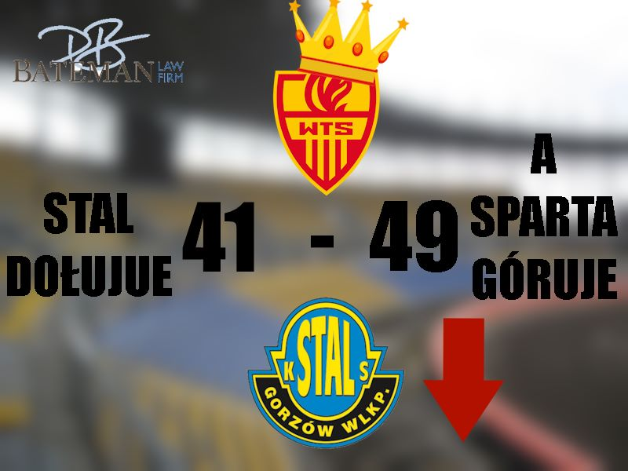

Newsy ze świata SC2023!!!

W hicie czwartej kolejki PGE Ekstraligi, Stal Gorzów podejmowała Sparte Wrocław przegrywając 41:49
Reszta kolejki odbędzie się jutro 19.06.2023. Odbędzie się transmisja z derbów Kujawsko Pomorskich, gdzie Apator Toruń podejmie Polonie Bydgoszcz na Motoarenie. Transmisja odbędzie się o godzinie 19:30